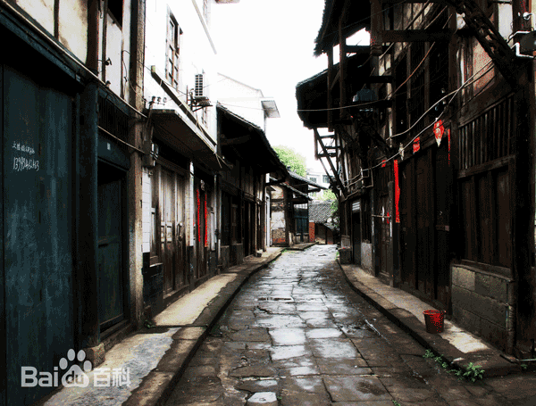

更:2022.08.19
回过头发现读起来有些羞齿，这章可以略过。
更:2022.01.17
发现回忆的一些片段美好得有些不真实，因为它们不代表全部。但它们又真实、不自觉地浮现在了脑海里面，心里还是很满足的。在写完的那一刻自己是与过去和解了吧。
出生地
我出生在一个小山村，名叫大桥村，因为从镇上到我们村需要跨过一条小河，河上有一座桥就叫大桥。我家一开始在一个大路里边的林地里，种着一小片柑橘地，在我稍大一点后我家就搬到了村子的聚集地，在这里我的父母贴着公路边上盖了一座两层小平房，楼顶有一个小小的蓄水池，那里也是我哥和我划过竹排的地方（提到竹排，找个机会专门说说我哥，虽然只比我大两岁半，但是他的动手能力和机灵程度都是我望尘莫及的。这个竹排就是他做的，他还自己做过遥控飞机—虽然最后只是一个半成品）。在楼顶处向前瞭望，公路稍稍蜿蜒到前方几百米处就消失在了一个颇为陡峭的下坡。读初中放假的时候我常常从楼顶眺望过去，当看到那个熟悉的身影逐渐出现在视线里，远远地走过来，就很开心，因为在城里读高中的哥哥回来了。而读初中的我每次放学从上坡走来，就能一点一点看到公路旁家里升起的炊烟，有时候还是旁边几家的炊烟，那是我记忆中颇为温馨和幸福的时刻。
这是我们镇上的老街了。每到赶集（赶场）的时候，这条狭窄的街道格外热闹，沿途都是人们进出、驻足在各家店铺里身影。店铺也是各种各样，有卖衣服的、卖玩具的，还有弹棉花的...

后来我在城里上高中和大学后也偶尔有回去过，忽然觉得再热闹的老街也冷清了。也会想着有一天能再体会一次赶集的氛围啊，也或许那份活力随着岁月的流逝永远地消逝了。这样做了心理建设之后，好像反而安心了一些。我一路走来经历了诸多波折，前路也是一片人生的荒地，需要不断磨练新的心境去开垦，可能唯有变化才是永恒不变的吧。有些画面在记忆中有一个快照或许也就足够了。
幼/小学
我上的幼儿园也就挨着小学，或者说在小学里边。我对幼儿园的记忆最深的就是，有两个老师特别好，所以我的幼儿园阶段算是过得无忧无虑吧。小学就叫石龙小学，因为我们镇就叫石龙镇。至于为什么叫石龙呢，大概你能猜到不就是有石头雕的龙呗。上文提到的大桥就有石龙，近年来新修的桥似乎也跟风雕了一些。但思来想去最清晰的地标都不在这几处，反而在一个我曾无比熟悉的地方，具体到再后几段说。
先接着说小学，小学是我发现自己有那么一点点绘画天赋的时候。五六年级的时候就和班上玩得最好的两（三）个小伙伴一起试着画连环画，我画得力求真实，而另外几个小伙伴都有自己的风格，所以他们比较随心和无顾忌一些，进而那段时间他们的“产出”好像比我多很多。我的完美心太重了，每个故事画了几页就画不下去了。我还记得我当时依样画葫芦，模仿一个连环画的一页，叫阿Q正传还是什么。最后还第一次上了学校的展示橱窗，虽然挺高兴的，但是有同学就说，只是照着画也不是太难，就还是有些小沮丧。后来兴致起来了，就第一次照着一本教科书上的水墨画模仿起了国画，那些浓淡、阴影、笔锋等等效果让我意识到了我做这件事的难度。但最后我还是生硬地画完了。我对我临摹的整体效果很满意，那是一幅林间溪流。画完之后有同学就惊为天人啊，要出两块钱还是五块钱买我的画（现在想来这位同学现在应该做生意做得很不错）。但是我拒绝了，我颇为自豪又小心翼翼地拿去给我们当时的美术老师看，我忘记了他具体说的话，但是我记得我是被嘲讽了一番，初生牛犊啊。不过这次尝试也为我初中的一次小小的出名埋下了伏笔。
小学到了高年级，我渐渐展露出了一些读书的天赋，于是我人生中又一位重要的老师出场了。（未完待续。。）
这几个板块我可能暂时更不完了，有缘再更吧。祝看到这里的朋友能喜欢这两个小小的故事，也原谅我拙劣的文笔。
祝你们能在往后的生活里攻坚克难，勇往直前；祝你们在孤单的时候能有亲朋爱人相伴；祝你们心中有炙热、眼里有光芒。